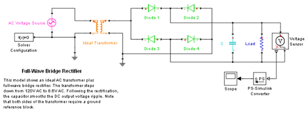

Full-Wave Bridge Rectifier
This is a model of a power supply that converts 120 volts AC to 12 volts DC. The transformer has a turns
ratio of 14, stepping the supply down to 8.6 volts rms, i.e. 8.6*sqrt(2) = 12 volts pk-pk. The full-wave
bridge rectifier plus capacitor combination then converts this to DC. The resistor represents a typical
load.
The model can be used to size the capacitor required for a specified load. For a given size of capacitor,
as the load resistance is increased, the ripple on the DC voltage increases. The model can also be used
to drive an application circuit in order to assess the effect of the ripple.
Copyright 2008-2009 The MathWorks™, Inc.
